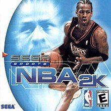

First Edition: NBA 2k
Ryan DysangcoThe very first installment of the beloved video game series was titled “NBA 2k”, and was developed by Visual Concepts and published by Sega. The game's initial release date was 24 years ago on November 10, 1999, and was launched for gameplay on the Dreamcast. Every version of the game has its own “cover athlete”, and for the first installment of 2k it was the one and only Allen Iverson of the Philadelphia 76ers.
Eventually, the game was released on other gaming consoles such as the PlayStation 2 and 3, Xbox, Xbox 360, and GameCube. The game featured fictional announcers, Rod West and Bob Steel. And of course, every current player in the National Basketball Association at the time. NBA 2k received high praise upon the game's release, with stunning visuals and controls. Scott Alan Marriott for AllGame highlighted the presentation style and called NBA 2k “a sports title that offers the graphics, playability, and artificial intelligence to convert nearly anyone who remotely enjoys the game of basketball into a hardcore fanatic”. The game even included playbooks by actual NBA coaches to make sure each team acts the way they do in real life. Although far from the greatest 2k game, it was the first of the iconic 2k franchise.
| Publication | Score | Date |
|---|---|---|
| CNET Gamecenter | 7/10 | Jan, 2000 |
| IGN | 9.2/10 | Dec, 1999 |
| GameSpot | 8.8/10 | Nov, 1999 |